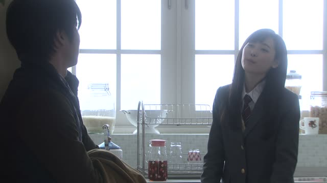
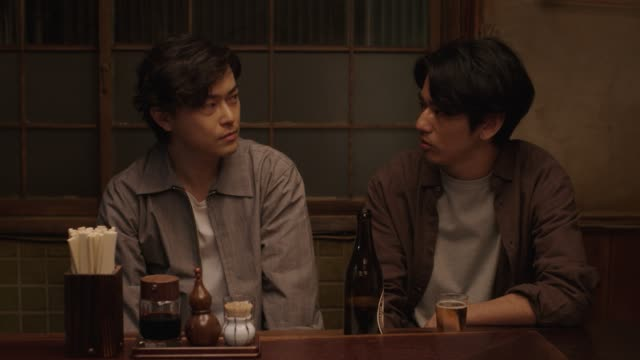

いつも・よく・時々

YouTube · video
いつも持ち歩いています。
"I always carry it with me."
いつも (always), よく (often) and 時々 (ときどき, sometimes) say how often something happens. They go before the action: いつも + 持ち歩いています.
On this card, the sentence answers "How often do you carry it?": every time. Without いつも it would just be "I carry it".
They never change. Polite or casual only shows at the end: いつも持ち歩いています / いつも持ち歩いてる.

Shirokuma Cafe · Episode 28
いつも持ち歩いてるの。
"I always carry it around."
いつも means every time, and goes before the verb. On this card, 持ち歩いてる is the casual 持ち歩いている ("carry around").
Quick Examples
A friend asks what you have for breakfast.
いつもパン。
"Always bread."
CasualThe café owner says they've seen you before.
よく来ます。
"I come here often."
PoliteA friend asks if you cook.
時々作る。
"Sometimes."
CasualA coworker asks if you watch Japanese TV.
時々ドラマを見ます。
"I watch dramas sometimes."
PoliteWith and without
いつも歩いて行きます。
"I always walk there."
よく歩いて行きます。
"I often walk there."
時々歩いて行きます。
"I sometimes walk there."
あまり歩いて行きません。
"I don't walk there much." あまり needs a negative at the end.
Examples from Media

YouTube · video
母は私はいつも少し変わっていると思っていました
"My mother always thought I was a bit odd."
いつも + 変わっている: always a bit different.
Kekkon Dekinai Otoko · Episode 9
私 よく来るんです。
"I come here often."
よく + verb: often.
Samurai Champloo · Episode 12
時々 考えるんです。
"Sometimes I think about it."
Last Samurai Standing · Episode 1
いつもと違います。
"It's not like usual."
いつも as a noun: "the usual".

New Atashin'chi · Episode 2
昔よくギンナン拾ったねえ。
"We used to pick ginkgo nuts a lot, didn't we?"
昔 (back then) + よく: something you did often in the past.

Good Morning Call · Episode 8
時々 子供みたい。
"Sometimes he's like a child."

Shirokuma Cafe · Episode 15
よく落ちてるんだ。
"They're often lying around."
よく = often.

Midnight Diner: Tokyo Stories · Season 2, Episode 8
よく知ってんな。
"You sure know a lot."
Careful: here よく means "well", not "often".